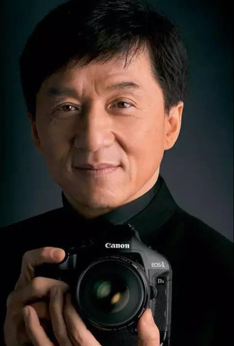
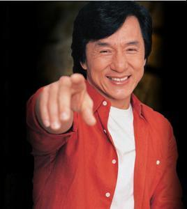

功夫巨星-成龙
-
简介
成龙（Jackie Chan，1954年4月7日-），原名陈港生，出生于中国香港，中国香港男演员、导演、电影监制，奥斯卡终身成就奖获得者。他早年以武师身份进入电影圈，其后自导自演多部作品，主演的《尖峰时刻》《警察故事》等电影多次打破国内外票房纪录，数次获金马奖、金像奖等荣誉，被美国《纽约时报》评为“史上20位最伟大的动作影星”第一位。
 2002
2002个人经历
-
儿童时期
1954年，成龙在香港出生，祖籍安徽省芜湖市鸠江区沈巷镇房桥村。成龙的父母亲最初在法国领事馆工作，父亲是厨师，也是京剧票友。成龙小时候很喜欢打架，因为他住在山顶领事馆区，附近尽是法国人、美国人，所以经常跟外国小孩子打。这种情况一直到他小学一年级。由于常打架、闹事，所以无法升级。成龙除了喜欢打架之外，还喜欢看武侠片。那时候成龙崇拜曹达华、于素秋等明星，一心想上山学艺。
1961年，成龙的父亲带着成龙来到尖沙咀的美丽都大厦，拜访京剧武生于占元师傅，他正是成龙崇拜的武侠女星于素秋的父亲。成龙看到这边的学生在旁勤奋的练功，觉得非常羡慕，便要求父亲让他在这练武。于是，成龙便成为这儿的一员，与洪金宝（元龙）﹑元奎、元华、元彬、元德、元彪成为七小福。于占元师傅的教育方式基本上是老戏行规矩的严厉与苦练，管束孩子做事、练功的方式就是打、罚。不到四天，成龙就后悔了。最初的那段日子，成龙常常在晚上暗自哭泣。
儿童时期成龙 -
练武时期
20世纪60年代，在戏曲班里，成龙每天清早五时起床练功，到晚上12时止。每天过着这样有规律的生活，但每月等派救济品时，便是他们最兴奋的时候了。几十个孩子聚在一起，等红十字会的人来送救济品，当中有白米、奶粉、食品等等。孩子们排半天队等待分配给自己的食物，平常他们吃的饭是大锅饭。烧饭就由女孩子轮流负责，饭够吃，至于配菜，就得用抢的。
成龙在七小福时期的艺名是元楼，凭着一副身手，他们住在荔园游乐场，长期表演京剧，他们几个人，一出戏里什么都做，幕后换装穿衣忙，幕前武打表演忙。此外，片场本是他们经常出入的地方，小时候演些童角、临时演员之类，所以成龙很早就出道，成了真正的功夫良才。
成龙 -
武师时期
20世纪70年代，成龙白天当武师，晚上回师父家睡觉。17岁时，成龙满师结业，依照老例，他向师父下跪叩头，感谢了师父提携之恩。
1971年，成龙开始从事武师的工作，主要在邵氏担任跑龙套的角色。在当武师时期，他的名字是陈元龙，他专门做名演员的替身。这段时期，成龙过着风花雪月的日子，工作之余，便尽情玩乐，跳舞、喝酒、上夜总会等，像其他武师一样过着没有明天的放任生活。
当武师，出生入死，出卖的是劳力，可惜地位卑微。每天等候导演来挑人，为了在众多人前被挑中，成龙常卖力演出，因而常被导演选上。在《精武门》片中成龙、元彪扮演的都是被李小龙暴揍的日本浪人，成龙还做了片末被陈真一脚踢飞撞在墙上的铃木的替身。当时拍摄的是李小龙飞脚踢人的场景，但被踢的演员受不了李小龙的脚力。身强力壮的成龙主动要求为这位演员当替身，挨了李小龙这一脚。因为他年轻，身手灵活，且勇于尝试，导演都乐意用他，有什么高难度动作，就会想起陈元龙。二十世纪70年代，成龙曾模仿李小龙的形象拍片，但始终无法走红。后来成龙转而开辟了功夫喜剧的路线。
青年时期成龙
人物评价
成龙，这个给原名陈港生的人起的艺名，本来是导演罗维为了将他打造成李小龙接班人而起。七十年代末他以民初功夫喜剧成名，八十年代以香港警察代言人的身份树立起港产动作片的里程碑，九十年代以超级警察的形象走出港岛、扬名世界。从1978至2008长达30年的时间里，成龙有6部电影获得香港年度票房冠军，共有24部进入年度三甲，总票房高达7亿。他在电影里屡屡加入新式武打动作元素，从一个功夫小子成长为现今香港电影著名的名片。
成龙，不仅在华人圈中声望极高，他从一个默默无名的小戏童一跃成为今日尽人皆知，家喻户晓的国际巨星，实属
成龙
成龙不仅是明星，还是社会活动家、慈善事业家。成龙在华人电影界闯出了自己的一片天，一步一个脚印，他的电影传奇还在续写。2004年2月20日，在中央电视台第二届“2003年感动中国十大新闻人物”的评选中，成龙因热心参与公益事业，获得了“感动中国人物”的称号。推荐委员们对成龙的评价是：成龙在好莱坞第一次向世人展示中国传统文化中英雄的概念，然而最打动人心的是成龙的公益心；成龙在国际演艺界为中国争了光，他热心公益，不忘回馈社会，这是难能可贵的。此外，成龙将越来越多的精力投放在内地的慈善和公益事业，汶川大地震后，他带头捐款，积极参与公益歌曲录制和公益晚会演出，一首《生死不离》成为2008年不易。成龙确实吃了太多的苦，受了太多的伤。成龙为华人电影也立下了汗马功劳，功不可没。成龙在日本是家喻户晓的人物。在美国洛杉矶、旧金山和加利福尼亚州都定有成龙日，旧金山影展曾授予他特别杰出奖。
成龙
传唱度高的公益歌曲；奥运会期间，成龙是唯一由奥组委官方推出个人奥运专辑的男歌手。他做的很多事情为中国人民起到了表率作用，就连欧阳中石也非常认可成龙在世界上为中国赢得的好形象，对他策划组织创作歌曲《国家》，称赞道：“成龙很了不起。”
经典台词
不经历风雨，怎么见彩虹，没有人能够随随便便成功。
我不是超人，我只是拼命努力的普通人。
人的一生往往被事业和爱情这两件事弄得疲惫不堪，但友谊却是上天对人类的最大恩赐。对于满身伤痕的俗世凡人，友谊是抚平伤痕和重新注入动力的仙丹良药。
我不想他一开始就平步青云，最好唱片都卖不掉，演戏没人看，受到挫折后才会知道老爸的名声靠不住。
行走江湖，最忌心浮气躁，沉住气，保持两秒距离，瞻前顾后，礼让最紧要。使出真功夫，方为大师傅。
两个五十分的人，才能给她一百分的成长环境。
我这一辈子，没有人跟我说辞职的句子大全，你是第一个，也是最后一个！